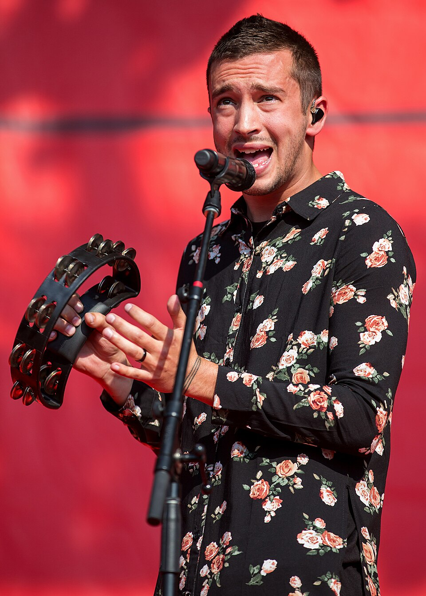

Tyler Joseph
Vocalista, compositor y fundador de la banda.
En la última década, un dúo musical rompió todos los esquemas de la industria al transformar la ansiedad, la depresión y las inseguridades en un fenómeno de masas global. Hablamos de Twenty One Pilots. Más que una banda de rock alternativo, este proyecto musical es el desarrollo de un complejo universo conceptual y psicológico que conecta con una generación entera.

Vocalista, compositor y fundador de la banda.
Baterista y pieza fundamental del sonido del grupo.
2013
2015
2018
2024
Me gusta Twenty One Pilots porque sus canciones tienen letras profundas, una gran variedad de estilos musicales y una identidad visual muy llamativa.